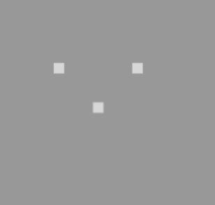
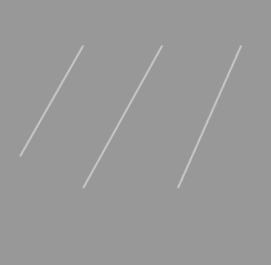
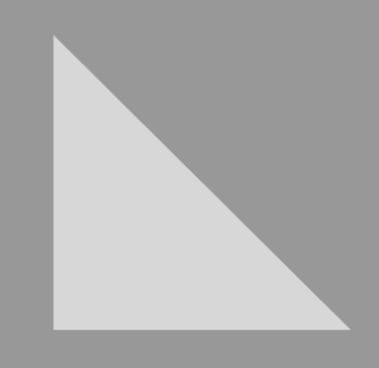

Rendering pipeline where Primitives are divided into a sequence of individual base primitives. After some minor processing, as described below, they are passed along to the rasterizer to be rendered.
We can use only 'POINT, LINE,TRIANGLE' for drawing.
Point (gl.POINTS) Line (gl.LINES) Triangle (gl.TRIANLGES)
  
We can make square Using 2 Triangle. so 12 triangle can makes one cube.
push 'Rotate!' button, then you can see cube is rotate. if you push again, cube is stop.